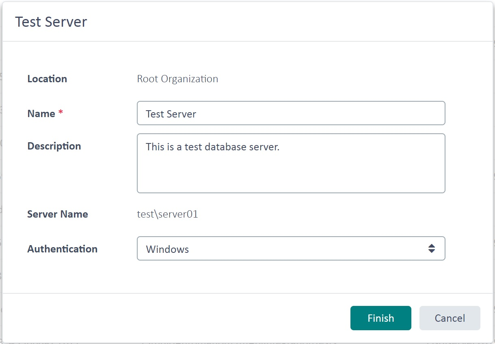

Retrieving Database Servers
This chapter shows how to access the database servers used by the TM Server programmatically.
Add a New Class
Start by adding a class called DatabaseServersProvider to your project. Add a public function called GetDBServers, which takes a TranslationProviderServer object as a parameter. Call this function from Connect as shown below:
var serverProvider = new DatabaseServersProvider();
serverProvider.GetDBServers(tmServer);
In GetDBServers, call the GetDatabaseServers method on the server object. Then loop through the database servers registered for the TM Server. Although most setups use a single database server, TM Server can connect to several database servers.
public void GetDBServers(TranslationProviderServer tmServer)
{
string serverInfo = string.Empty;
foreach (DatabaseServer dbServer in tmServer.GetDatabaseServers(DatabaseServerProperties.None))
{
serverInfo += "Server name: " + dbServer.ServerName + "\n";
serverInfo += "Friendly server name: " + dbServer.Name + "\n";
serverInfo += "Server description: " + dbServer.Description + "\n";
serverInfo += "Server type: " + dbServer.ServerType + "\n\n";
}
MessageBox.Show(serverInfo, "Database Server Information");
}
In the foreach loop, build the string that contains the database server properties. ServerName returns the full DNS name or IP address of the database server, while Name returns the friendly database server name. When registering a database server, the administrator can enter the actual server name, such as sqlserv\sqlexpress, and assign a friendly name such as Test Server. You can also retrieve the optional Description and the Authentication type, which can be Windows or database authentication.
The image below shows a box with information about a specific database server in the GroupShare Web UI:

Putting It All Together
The complete class looks like this:
namespace SDK.LanguagePlatform.Samples.TmAutomation
{
using System.Windows.Forms;
using Sdl.LanguagePlatform.TranslationMemoryApi;
public class DatabaseServersProvider
{
public void GetDBServers(TranslationProviderServer tmServer)
{
string serverInfo = string.Empty;
foreach (DatabaseServer dbServer in tmServer.GetDatabaseServers(DatabaseServerProperties.None))
{
serverInfo += "Server name: " + dbServer.ServerName + "\n";
serverInfo += "Friendly server name: " + dbServer.Name + "\n";
serverInfo += "Server description: " + dbServer.Description + "\n";
serverInfo += "Server type: " + dbServer.ServerType + "\n\n";
}
MessageBox.Show(serverInfo, "Database Server Information");
}
}
}
See Also
Required References and Namespaces